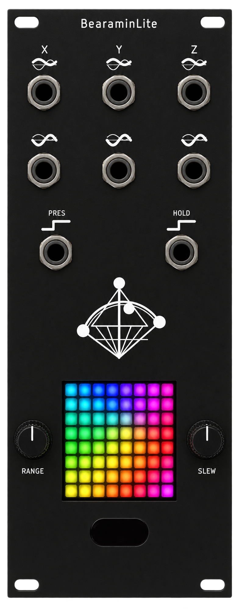

SMALL BEAR. BIG POSSIBILITIES.A little motion.
A little motion.
A lot of possibility.
A whole copse of Bearamin friends. Connect yours, find your sound, and make motion yours.

Welcome to the family.
Connect one Bearamin at a time by USB or Bluetooth MIDI, then choose Connect. We’ll find its firmware and show you the steps. For Bluetooth, connect it in your computer’s MIDI settings first.
First time here?
First firmware update? Choose your Bearamin to get started.
Your Bearamin is ready.
Need a fresh start?
Checking firmware…
Preparing your installation.
- Open this page in desktop Chrome or Edge and connect Bearamin Lite with a USB data cable.
- Close any app using its USB connection. Hold BOOT, press and release RESET, then release BOOT if the device does not appear.
- Choose Install, select your Bearamin’s USB port, and follow the prompts. Keep it powered and connected until installation finishes.
- Restart your Bearamin, then open Field Guide and choose Connect.